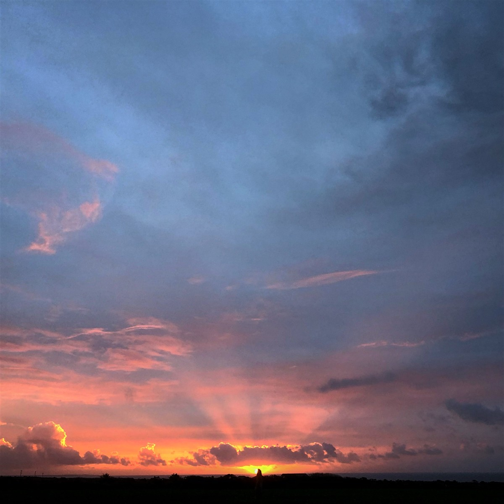
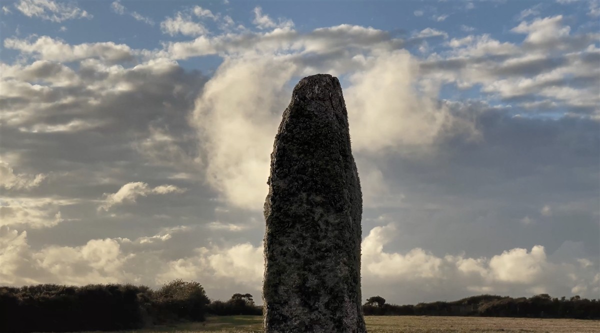
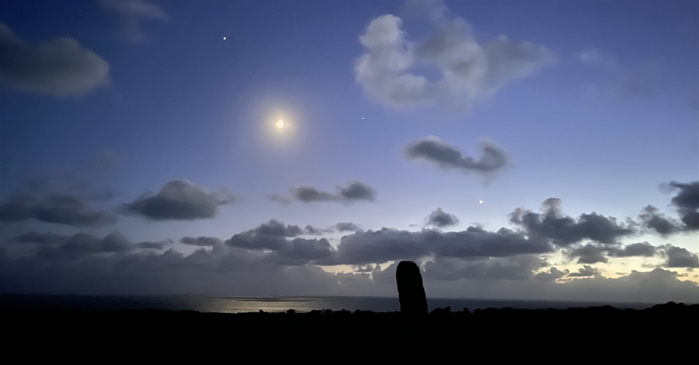
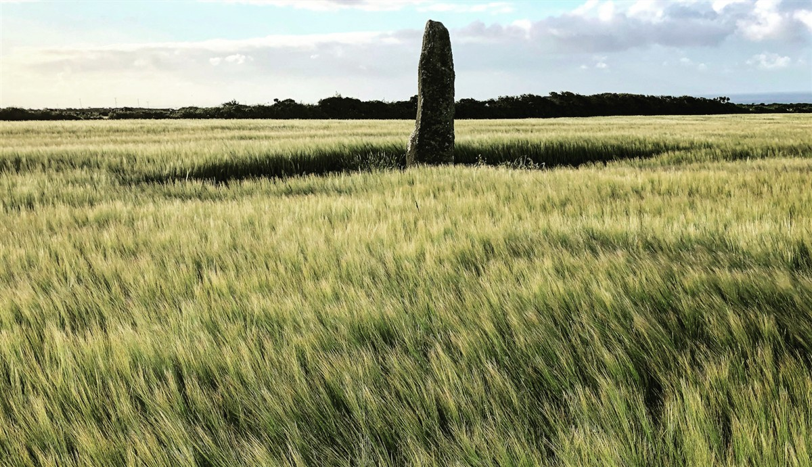
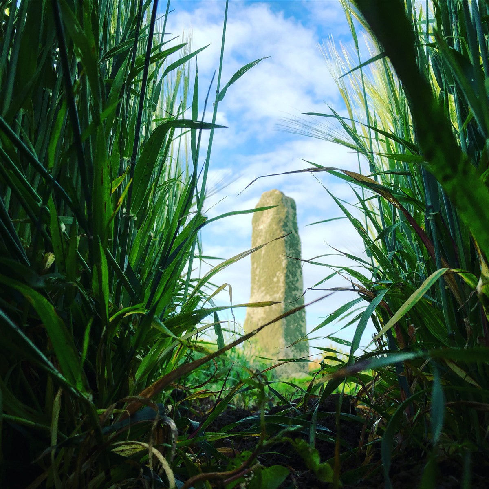
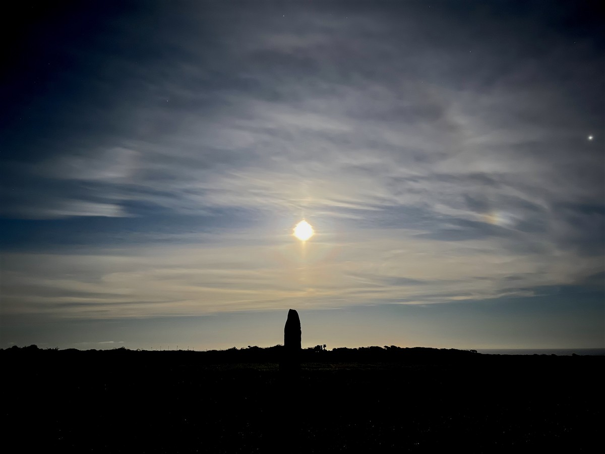
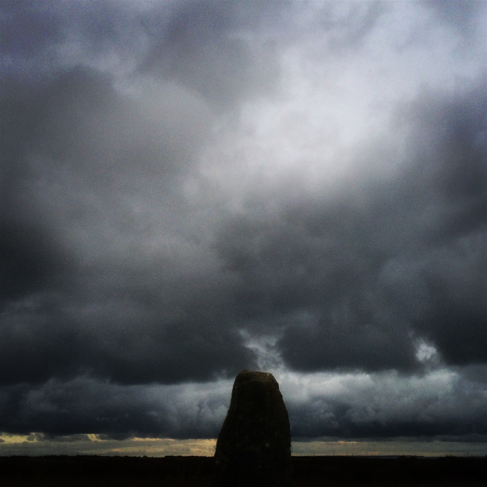

“A silent cry about the climate crisis and a penetrating meditation on what life is. A film full of ideas that resonate deeply, told as a penetrating dream that shakes you awake.“
InScience film festival NL
2024
Grand jury prize
A YEAR IN A FIELD to be released across North America.
To mark Earth Day 2026, Canadian film distribution company Spectacular Optical are releasing Christopher Morris’s 2023 feature documentary A Year In A Field. The distributor Kier-La Janisse will be releasing films across theNorth american continent with a focus on landscape and design, music and counterculture, and experimental genre works.
The first release is a small, quiet film about one field in Cornwall, UK.
Read more: DEADLINE EXCLUSIVE
“For A Year in a Field to now find its way across North America is a wonder,” Morris said in a statement. “I hope this small, quiet film about one field in England finds a true home within such a vast and complex continent.”
A YEAR IN A FIELD
2023 | 4K | Colour
A quiet film by Christopher Morris
An ancient monolith stands sentinel in a Cornish field for millennia. Part provocation, part meditation, part invocation, BAFTA-winning documentarian Christopher Morris’s A YEAR IN A FIELD is a record of their brief interaction.
BAFTA-winning documentarian Christopher Morris invites us to slow down, as he films for a year in a West Cornwall field; to immerse ourselves in this quiet, direct-action of stillness, to take a breath and reflect on the planetary impacts of our brief human existence, under the watchful gaze of the Longstone, a 4,000-year-old standing stone that predominates this elemental landscape.
From Winter Solstice 2020 to Winter Solstice 2021, a string of unprecedented worldwide climate disasters, met by weak global political resolve, are revealed as just fleeting moments, under the ever-present unflinching granite gaze of the Longstone.
As the wheel of the year turns, Morris’s ecosophical polemic unearths a mythic reality buried just below the furrowed soil of our consumerist age, suggesting, perhaps, that whilst time may feel like it’s running away at an ever-increasing rate, it’s not too late to pause, reflect, and change.
“Elegiac, meditative, yet profoundly important film ….”
Sheffield international Documentary Festival

A YEAR IN A FIELD is not made by a climate scientist. It is a lo-fi, low-impact film - in contrast to the overblown, blue-chip, carbon-generating productions that fly the globe in pursuit of unfamiliar wonders to address the climate emergency through a tech-driven cinematic dazzle - more akin to science fiction.
There are no interviews or experts in this film. In fact, there are no human beings at all; instead, an unassuming Cornish field near Land’s End takes centre stage, and a crop of spring barley forms the centre of an unfolding, compelling and beautiful narrative.
The field is extraordinary in one respect - at its centre is the Longstone, a 4000-year-old standing stone, carved, and thrust into the soil at a time when humans first began on an industrial scale to adversely affect the planet. This pillar of granite has stood silent sentinel to everything we have done and continue to do to our planet. The ominous stone figure forms the central protagonist in this sublimely unique film – it points to where we have come from and perhaps where we are headed.
A cultivated field, an ancient monolith, and a transitory human observer. This film is a record of their brief interaction.





Personal Statement
Christopher Morris
A Year In A Field.
This film wasn’t accidental (in so much as I had already spent six years photographing the standing stone) and it wasn’t original (in so much as I had bought an out-of-print book, that I had not read, about a man who charted a year in the life of a field).
The film I made was unlooked for, unplanned and probably the better for it.
The field is a mile from my home in Cornwall, the far west of Britain. Since 2015, I have photographed the field and the standing stone at its centre (@standing_granite) forging an intimacy with the place.
On the winter solstice 2021, I began filming a few unconnected shots and recalling my unread copy of “A Year In The Life Of A Field”, I decided to do the same.
The moment I started. I did not and could not stop.
I was no Walt Whitman (at one in wild nature) but I did film for over 270 days, walking or cycling as often as not, to the field in all seasons and all weathers. Sometimes just for a few minutes to film a a squall pass through, at other times to spend hours quietly on my own, with my own thoughts. I kept a detailed diary of all the birds I heard, the direction of every wind and the changing flora and fauna throughout the year.
I wasn’t filming the sublime or the exotic, I pursued the ordinary, the familiar, the ignored.
I certainly did not set out to make a film that tackled climate change: who on earth would do that? But standing day after day in the field, with the climate seemingly unravelling across the world, I found myself thinking things I’d not thought before. I’ve never glued my hand to a road or strapped myself to a tree and I’ve never even been on a protest march - but standing quietly in a field: completely unnoticed, a one-man direct action of stillness, appealed to me and the green shoots of A Year In A Field emerged with the spring.
There are no humans in this 86-minute film but the standing stone forms the centrepiece of the action - a symbol of both our ingenuity and our hubris.
The visual language of A Year In A Field was dictated by the fact that although I had plenty of time, I had no budget. So it was made with a few key rules.
- Use a basic camera (I had one)
- No camera movement (my old tripod could not pan or tilt)
- No drones (I didn’t have one)
- No interviews (I didn’t have a microphone)
- No lights (I didn’t have any)
My final rule was no time-lapse. It would not cost any money (as my camera had a time-lapse option) but filming clouds scudding over an ancient monument in silhouette is the lazy, default choice of a filmmaker with no ideas. The last fifteen minutes of my film, it turned out, was entirely shot in time-lapse.
A Year In A Field is ultimately a mediation, with its rhythm crafted in response to that of the seasons.
It is also an uncertain film, for with certainty there is no room left for curiosity.
“It is incredibly moving – make no mistake, this is not a nature documentary, this is a protest film, a slow one, but a loud voice”.
LOUDER THAN WAR review
Mario Cauter
PRESS RELEASE
A YEAR IN A FIELD
Filmmaker Christopher Morris has never been on a protest march.
He has never glued his hand to a road.
He has never strapped himself to a tree.
Instead, he stands in an ordinary Cornish field for a year and films.
A quiet, unnoticed one-man vigil, a direct action of stillness.
A YEAR IN A FIELD received its World Premiere at the Sheffield International Documentary Festival in May 2023
The film is produced by Bosena Films and distributed by Anti-Worlds Releasing.
SYNOPSIS
BAFTA-winning documentarian Christopher Morris reflects upon human existence, its relationship to
the environment and the urgent need for compassion and transformation.
Weathering the elements in the centre of the field near Lands End is a standing stone, an ancient
relic that has silently witnessed over 4,000 years of human development.
The stone and a crop of spring barley take centre stage in an unfolding and compelling narrative.
Beginning on Winter Solstice 2020, as the order of the natural world seemingly unravels around the globe;
Morris’s ecosophical polemic unearths a mythic reality buried just below the furrowed soil of our consumerist age,
suggesting, perhaps, that whilst time may feel like it’s running away at an ever-increasing rate, it’s not too late
to pause, reflect and change.
Beautifully shot, with a richly layered sound design, A YEAR IN A FIELD is not made by
a climate scientist. It is a made by someone simply standing still in a field for a year,
silently watching and listening.
This lo-fi, sustainable, British environmental film, offers an fresh vision; a
counterpoint to the blue-chip, carbon-generating productions that fly the globe in
pursuit of the climate crisis. A YEAR IN A FIELD is a quiet, unnoticed vigil, a direct
action of stillness.
REVIEWS
“A visual poem… inspiring, uplifting and engaging. I was deeply moved watching it.
The film illuminates the magic of nature and evokes a profound love for nature.
Watching A Year in a Field is a transformative experience.”
Satish Kumar (Founder: Schumacher College & Editor Emeritus: Resurgence & Ecologist)
“thoughtful, meditative documentary”
Cath Clarke
Guardian
“The most moving and thought provoking film I have ever seen. Its
quiet assurance in embracing the pace of the natural world and its
rhythm, speaks profoundly of our relationship to the natural world.”
Sir Tim Smit (Founder: The Eden Project)
”This is what all filmmaking should be like: an undisguised personal voice.”
Mark Jenkin (Spectator Magazine)
“A quietly devastating piece of work… as beautiful as it is despairing.”
Laurence Boyce (Cineuropa)
“So quiet but so powerful… a film that whispers a truth about the environment, louder
than I have ever heard.”
Kirk Jones (Director: Nanny McPhee, What To Expect When You Are Expecting)
“An elegiac, meditative, yet profoundly important film…”
Sheffield Documentary Festival (2023)
“It is incredibly moving – make no mistake, this is not a nature documentary, this is a protest film, a slow one, but a loud voice”.
LOUDER THAN WAR review
Mario Cauter
“A silent cry about the climate crisis and a penetrating meditation on what life is. A film full of ideas that resonate deeply, told as a penetrating dream that shakes you awake.“
InScience film festival NL
2024
Grand jury prize
CONTACTS AND DISTRIBUTION
For North American distribution please contact Kier-La Janisse at Spectacular Optical
https://spectacularoptical.com
For UK and world distribution please contact Andy Starke.
Andy Starke at Anti-Worlds
Releasing
For film or press enquiries
Please contact: Denzil Monk (Bosena Films)
To contact the filmmaker
Please contact: Christopher Morris
